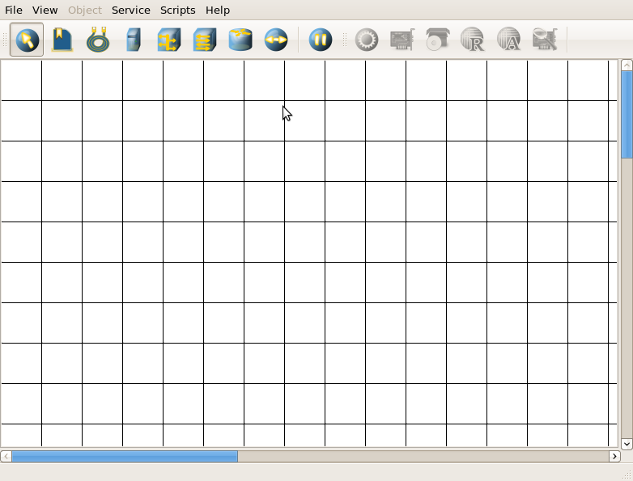

| Manual NetEmul | ||
|---|---|---|
| Prev. | Next | |
All units take places on a working area (further the scene). Devices are placed on the panel of devices.

So the program main window looks. On all free area of the scene marked by a grid it is possible to put devices, thus they should not be
intersected. On the panel of devices all networks necessary for construction tools, and as the button of sending of messages and start/stop
are placed. For your convenience, at prompting on the tool, in a status bar there is a hint. On the adjacent panel (the panel of parameters)
properties of objects are allocated. For the selected object there are only those properties which are characteristic for it.
Panels can be moved to a place convenient for you or at all to remove.
It was very short browse and that it is better to understand with the program interface it is necessary to look choices and all customizations.
More concrete description of certain operations can be found further, in appropriate sections.
| Prev. | Main | Next |
| Ip-addressing | On level above | network Customization |